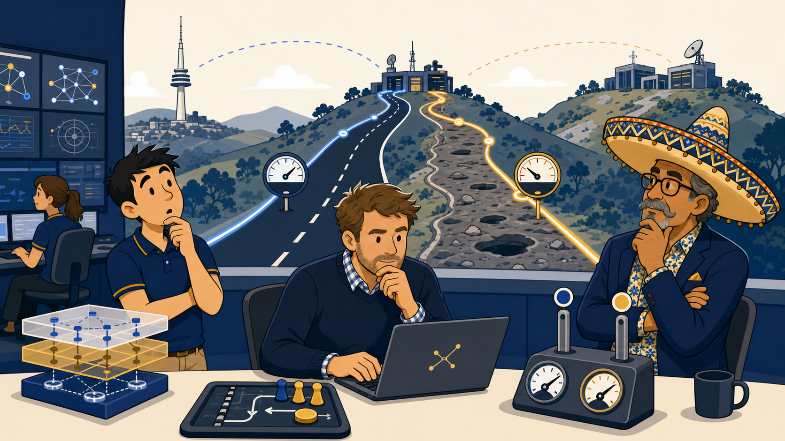

EP-01
The Two Roads Out of Tuggers

Illustration not yet generated
images/ep-01-the-two-roads-out-of-tuggers.png
See
images/prompts.txt for the AI prompt.Story
Tuggers has two WAN links, but users experience inconsistent performance.
Topics
- SD-WAN fundamentals
- Members and zones
- Rules and health checks
- Underlay vs overlay
Learning outcomes
- ✓Explain how members, zones, and rules compose an SD-WAN.
- ✓Distinguish underlay measurement from overlay decisions.
- ✓Predict which member a new session will use.
Mental model
Member = road; health check = measurement; rule = new-session decision.
Topology change
Two active WAN members at Tuggers.